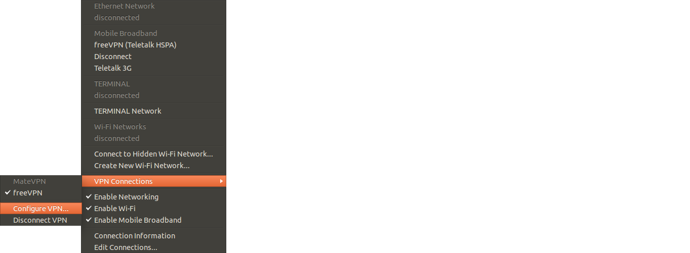
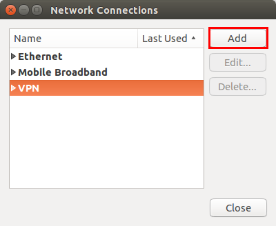
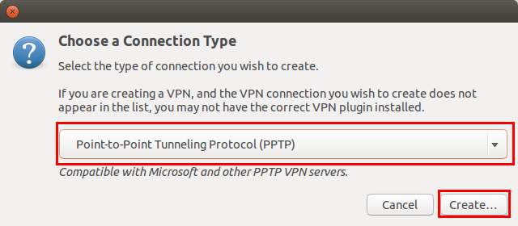
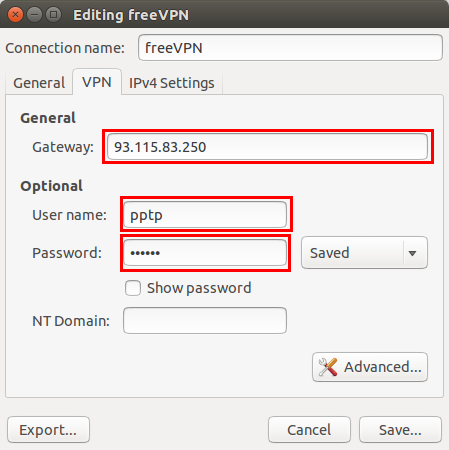
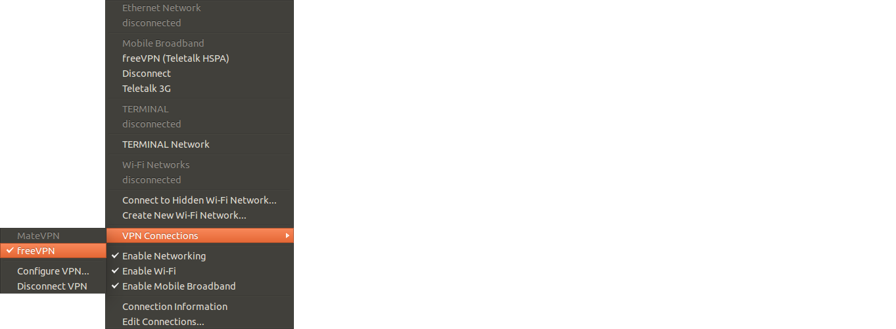
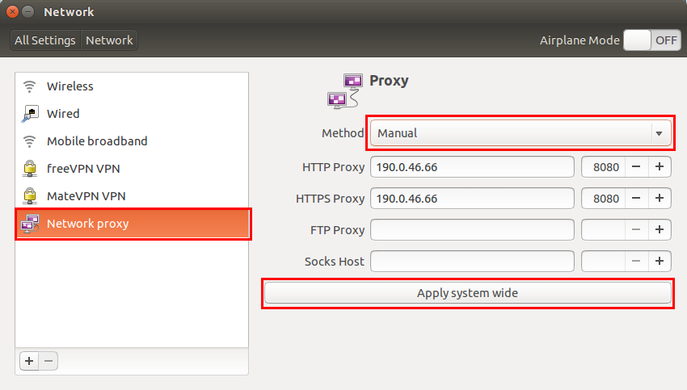

তারিখ: ১৪ / ০৫ / ২০১৪
Ask Ubuntu তে ঢুকা যাচ্ছে না?!
বেশ কয়েকদিন ধরে দেখা যাচ্ছে টেলিটক ত্রিজি ব্যবহার করে Ask Ubuntu সহ Stack Exchange এর কোন সাইটেই ঢুকা যাচ্ছে না। সম্ভবত কোন কারণে বা কোন কারণ ছাড়াই টেলিটক Stack Exchange ব্লক করে রাখছে! VPN বা Proxy Server ব্যবহার করে এ সমস্যার সমাধান করা যাবে।
উবুন্টুতে ভি,পি,এন ব্যবহারের নিয়ম:
ইন্টারনেটে অনেক ফ্রী এবং পেইড ভি,পি,এন সেবা পাওয়া যায়। আমি FreeVPN সাইট থেকে PPTP ভি,পি,এন ব্যবহার করছি। তবে যে সাইট হোক না কেন PPTP VPN কনফিগার করার নিয়ম একই। এই সাইটে গেলে দেখবেন ওদের PPTP VPN server এর IP Address, Password, এবং username দেওয়া আছে।
(ব্যবহৃত স্ক্রিনশটগুলো উবুন্টু ১৪.০৪ থেকে নেওয়া)
উবুন্টুতে নেটওয়ার্ক ম্যানেজার অ্যাপলেট থেকে VPN connections --> configure VPN এ যান।

এবার সেখান থেকে Add অপশনে ক্লিক করুন।

এতে ক্লিক করলে দেখবেন কানেকশনের ধরন নির্বাচনের জন্য নতুন একটি উইন্ডো আসবে। সেখানে অনেক ধরনের কানেকশনের একটা ড্রপ ডাউন তালিকা পাওয়া যাবে। সেখান থেকে Point-to-Point Tunneling Protocol(PPTP) নির্বাচন করে creat বোতামে ক্লিক করুন।

এবার ভি,পি,এন কানেকশনের তথ্য দেওয়ার একটি উইন্ডো আসবে সেখানে Gateway এর যায়গায় সেই সাইট থেকে পাওয়া IP Address দিন। এবং username, password এর যায়গায় username, password দিয়ে save বোতামে ক্লিক করুন।

আপনার ভি,পি,এন কনফিগার করা শেষ এবার VPN connections এ গিয়ে আপনার ভি,পি,এন টি নির্বাচন করুন। দেখবেন কিছুক্ষনের মধ্যেই সেটি সংযুক্ত হয়ে যাবে এবং আপনি Ask Ubuntu ঢুকতে পারছেন।

উবুন্টুতে প্রক্সি সার্ভার ব্যবহারের নিয়ম:
ইন্টারনেরে অনেক ফ্রী প্রক্সি সার্ভার পাওয়া যায়। যেমন Hide My Ass ওয়েবসাইটে গেলে দেখবেন এখানে অনেকগুলো প্রক্সি সার্ভারের তালিকা দেওয়া আছে। স্পীড বেশি, এবং কানেকশন টাইম ভাল এরকম দেখে একটি প্রক্সি সার্ভার নির্বাচিত করুন। এবার system settings --> Network --> Network Proxy তে গিয়ে সেখান থেকে Method ড্রপডাউন তালিকা থেকে Manual নির্বাচিত করে সেখানে আপনার নির্বাচন করা প্রক্সি সার্ভারের IP address এবং Port দিয়ে Apply system wide প্রয়োগ করুন (এটা না করলেও কাজ হবে)। এবার দেখবেন Ask Ubuntu তে ঢুকতে পারছেন।

সতর্কীকরণ:
ভি,পি,এন বা প্রক্সি সার্ভার এর সাথে সংযুক্ত হলে ইন্টারনেট কানেকশন এর গতি ভি,পি,এন বা প্রক্সি সার্ভারের গতির উপর নির্ভর করবে। যে কারণে গতি মূল গতির চেয়ে কমে যেতে পারে। যেমন FreeVPN ব্যবহার করে আমি গতি পাচ্ছিলাম প্রতি সেকেন্ডে ৮০ থেকে ৯০ যদিও আমার মূল গতি প্রতি সেকেন্ডে ১২০ থেকে ১২৮।

Web Counters
আশফাকুর রহমানযে কোন জিজ্ঞাসা, মতামত অথবা অভিযোগের জন্য Mail (sajib.finix@gmail.com) করুন।